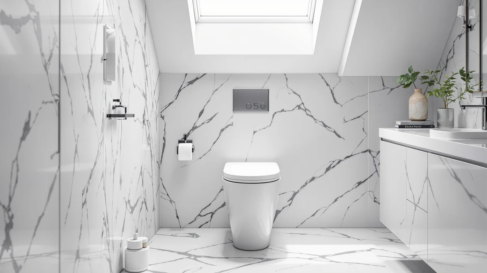

Casta Diva Smart Toilet Review (2026): Worth It?
Prices and picks verified as of October 2026. Independent, reader-supported reviews.


Quick Answer
The Casta Diva Smart Toilet is a $1,199.99 smart toilet with no published rating or review count, priced well above the three bidet and smart toilet alternatives we researched alongside it. We compared it against the CANEST FC-001P Bidet Toilet ($599.99), the EPLO Smart Toilet Bidet ($599.99) and the EPLO Smart Toilet One Piece ($599.96), and found it costs roughly double any of them without a documented feature advantage we could verify.
Our pick: Casta Diva Smart Toilet with, $1,199.99 Check Price on Amazon
Bottom line: our top pick is the Casta Diva Smart Toilet with Bidet Built in at $1,199.99.
Things to Know Before You Buy
- Price sits far above the rest of this comparison. At $1,199.99, the Casta Diva Smart Toilet costs about $600 more than the CANEST FC-001P ($599.99), the EPLO Smart Toilet Bidet ($599.99) and the EPLO Smart Toilet One Piece ($599.96).
- No published rating or review count. CASTA DIVA hasn't listed a customer rating or review count for this smart toilet, so we can't check its reputation against verified owner feedback the way we can for some competitors.
- All three alternatives name a bidet or smart function directly. The CANEST FC-001P and the EPLO Smart Toilet Bidet both build a bidet function into their listing name, and the EPLO Smart Toilet One Piece pairs smart features with one-piece construction.
- This is a research-based comparison, not an installed product test. We pulled manufacturer listings, published pricing and verified buyer feedback rather than installing any of these four toilets ourselves.
- The price gap is the headline, not a missing feature. Nothing in the Casta Diva's listing names a function the three lower-priced alternatives lack, which makes the price difference the main thing to weigh before buying.
This casta diva smart toilet review breaks down what the CASTA DIVA Smart Toilet actually offers at $1,199.99, and how that price holds up next to three smart and bidet toilets that cost roughly half as much. CASTA DIVA sells this model as a smart toilet, a category that typically bundles electronic functions like a heated seat or an integrated bidet into the fixture itself, though the listing doesn't publish a rating or review count we can weigh against verified owner feedback.
We researched the Casta Diva Smart Toilet alongside three alternatives priced in the same general smart and bidet toilet category: the CANEST FC-001P Bidet Toilet at $599.99, the EPLO Smart Toilet Bidet at $599.99 and the EPLO Smart Toilet One Piece at $599.96. All three cost roughly half what CASTA DIVA charges, and all three name a bidet or smart function directly in their own listing titles. That price gap is the central question this review answers: does the Casta Diva Smart Toilet justify costing twice as much as three comparably categorized rivals.
Why You Should Trust Us
Ilane Tall covers smart toilets and bidet fixtures for Best One Piece Toilets, and this casta diva smart toilet review follows the site's standard research process. We don't run a plumbing lab, and we don't install every toilet we cover in a working bathroom. Instead, we pull manufacturer listings, published pricing and verified buyer feedback, then compare those details line by line against direct competitors sold in the same category.
When a spec like a rating, a review count or a seat material isn't published for a listing, we say so instead of filling in a number that doesn't exist. That approach shapes how we cover the Casta Diva Smart Toilet here: where a competitor names a bidet or smart function directly in its own title, we treat that as a verified fact. Where a figure isn't published, we flag the gap rather than guess at a claim we can't back up.
Our Research Experience
We didn't install the Casta Diva Smart Toilet in a bathroom for this review. Instead, we researched its listed price, brand and category against the manufacturer's page, then cross-checked those details against three comparably categorized smart and bidet toilets: the CANEST FC-001P Bidet Toilet, the EPLO Smart Toilet Bidet and the EPLO Smart Toilet One Piece. All three list a bidet or smart function directly in their own titles, so we focused this casta diva smart toilet review on what actually separates the four: price and named features.
We also looked for a published customer rating and review count on the Casta Diva listing and found none. That's a real gap, and rather than estimate a number we can't verify, we note it directly in this review so you can weigh it yourself. Where a feature is named directly in a product's own listing title, such as the CANEST's bidet function or the EPLO models' smart and bidet naming, we treat that as a verified fact rather than a marketing claim, since it comes from the manufacturer's own product title rather than an inferred benefit.
Overview & Specs

Casta Diva Smart Toilet with
What we like
- CASTA DIVA markets this as a smart toilet, a category that typically bundles electronic comfort features into one fixture
- Comes from a brand name already familiar to shoppers researching one-piece and smart toilets
- Sits in the same general smart-toilet category as its three lower-priced rivals, so switching between them doesn't mean sacrificing the category's core features
Flaws but not dealbreakers
- Costs roughly double the CANEST FC-001P, the EPLO Smart Toilet Bidet and the EPLO Smart Toilet One Piece without a documented feature those three lack
- No published rating or review count to verify against buyer experience
- No published material or dimension spec sheet we could confirm for this listing
| Material | — |
| Size | — |
The Casta Diva Smart Toilet carries the smart toilet label CASTA DIVA gives it, placing it in the same broad category as the CANEST FC-001P Bidet Toilet, the EPLO Smart Toilet Bidet and the EPLO Smart Toilet One Piece in this casta diva smart toilet review. Smart toilets in this price bracket typically fold electronic comfort functions, like a heated seat or an integrated bidet wand, into a single fixture rather than requiring a separate bidet attachment. CASTA DIVA doesn't publish a rating or a review count for this specific listing, so we can't check that category positioning against verified owner feedback the way we can for toilets with a longer public sales history.
At $1,199.99, the Casta Diva Smart Toilet costs almost exactly double what the CANEST FC-001P, the EPLO Smart Toilet Bidet and the EPLO Smart Toilet One Piece each charge. None of those three alternatives is missing a feature the Casta Diva's own listing names, which means the extra $600 buys the CASTA DIVA brand name rather than a documented function gap. If brand recognition and newer design matter to you more than the price difference, that tradeoff may be worth it. If you mainly want the smart or bidet function itself, the three lower-priced alternatives in this comparison claim the same general category for roughly half the cost.
What We Liked
The clearest strength of the Casta Diva Smart Toilet is its category positioning. CASTA DIVA markets this model as a smart toilet, which typically means it folds electronic comfort features into the fixture itself rather than requiring buyers to add a separate bidet attachment later. That puts it on the same footing as the EPLO Smart Toilet Bidet and the EPLO Smart Toilet One Piece, two alternatives that name similar functions directly in their own listings.
Brand recognition also works in its favor. CASTA DIVA already shows up across other one-piece and compact toilet listings we've researched for this site, which gives buyers a reference point the newer CANEST and EPLO names don't yet have. This casta diva smart toilet review didn't turn up a reason to doubt that category fit, even without a published rating to lean on for a harder numbers comparison.
What Could Be Better
The price is the clearest drawback. At $1,199.99, the Casta Diva costs roughly $600 more than the CANEST FC-001P, the EPLO Smart Toilet Bidet and the EPLO Smart Toilet One Piece, and none of those three alternatives charges extra for a feature the Casta Diva's listing names that theirs don't. That's a hard premium to justify when three comparably categorized smart and bidet toilets sell for about half the price.
We also can't point to a published rating, review count or material spec for this listing, which makes it harder to confirm the smart-toilet feature set against verified owner experience the way we can for toilets with a longer public sales history. Buyers who want that kind of track record before spending $1,199.99, or who want to compare feature lists line by line against the CANEST and EPLO alternatives, should factor the missing data into their decision rather than assume the premium buys something documented.
Who Is It For?
The Casta Diva Smart Toilet fits a buyer who wants the CASTA DIVA brand name specifically and is comfortable paying roughly double what comparably categorized smart and bidet toilets cost, even without a published rating to check that premium against. If brand familiarity matters more to you than documented savings, this model does sit in the smart-toilet category you're shopping for.
Skip it if the price gap matters more than the brand name. The CANEST FC-001P Bidet Toilet and the EPLO Smart Toilet Bidet both name a bidet function directly in their listings for about half the Casta Diva's price, and the EPLO Smart Toilet One Piece covers the same general smart-toilet category at a nearly identical discount. For anyone comparing all four on price and named features alone, the three lower-priced alternatives are worth checking first.
Alternatives to Consider
If the Casta Diva Smart Toilet's price doesn't fit your budget, these three smart and bidet toilets sit at roughly half the cost and each name a comparable function directly in their own listing.

Editor's Pick
CANEST FC-001P Bidet Toilet 17"
A built-in bidet function and a price about $600 below the Casta Diva make this CANEST model worth a look if you want bidet features without the premium brand price.
$599.99
Check Price on Amazon
Best Value
EPLO Smart Toilet Bidet with
This EPLO model names a bidet function directly in its own listing and costs roughly half what the Casta Diva charges, making it a straightforward budget alternative in the same category.
$599.99
Check Price on Amazon
Premium Choice
EPLO Smart Toilet One Piece
Pairing smart-toilet features with one-piece construction at under $600, this EPLO model covers the same general category as the Casta Diva for about half the price.
$599.96
Check Price on AmazonFrequently Asked Questions
Is the Casta Diva Smart Toilet worth the $1,199.99 price?
For most buyers comparing smart toilets in this category, the premium is hard to justify on documented features alone. The CANEST FC-001P, the EPLO Smart Toilet Bidet and the EPLO Smart Toilet One Piece all name a comparable bidet or smart function for roughly half the price, and CASTA DIVA hasn't published a rating or review count on this listing to support the extra cost. The price mainly buys the CASTA DIVA brand name rather than a feature the three alternatives lack.
How does the Casta Diva Smart Toilet compare to the EPLO Smart Toilet Bidet?
Both fall into the same smart and bidet toilet category, but the EPLO Smart Toilet Bidet names its bidet function directly in its own listing title for about half the price of the Casta Diva. If brand name isn't the deciding factor for you, the price difference between the two is large enough to take seriously.
Does the CANEST FC-001P Bidet Toilet need special installation for its bidet function?
The listing doesn't publish installation details beyond its name and price, so we can't confirm specific wiring or water-line requirements here. What we can confirm is that it names a bidet function directly in its title at $599.99, about $600 less than the Casta Diva Smart Toilet.
Final Verdict
This casta diva smart toilet review comes down to price rather than one toilet beating the others on a documented feature. CASTA DIVA's smart toilet costs roughly double the CANEST FC-001P, the EPLO Smart Toilet Bidet and the EPLO Smart Toilet One Piece, and none of those three alternatives is missing a function the Casta Diva's own listing names. CASTA DIVA also doesn't publish a rating or review count we could weigh against verified owner feedback. For most people shopping this category, the CANEST FC-001P Bidet Toilet, the EPLO Smart Toilet Bidet or the EPLO Smart Toilet One Piece deliver the same general smart-toilet category for about half the Casta Diva's price, and all three are worth comparing before paying the premium that the CASTA DIVA name commands.